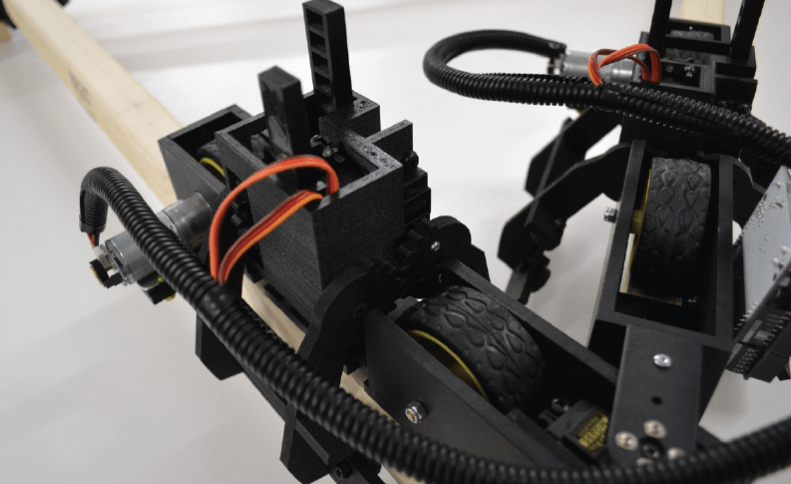
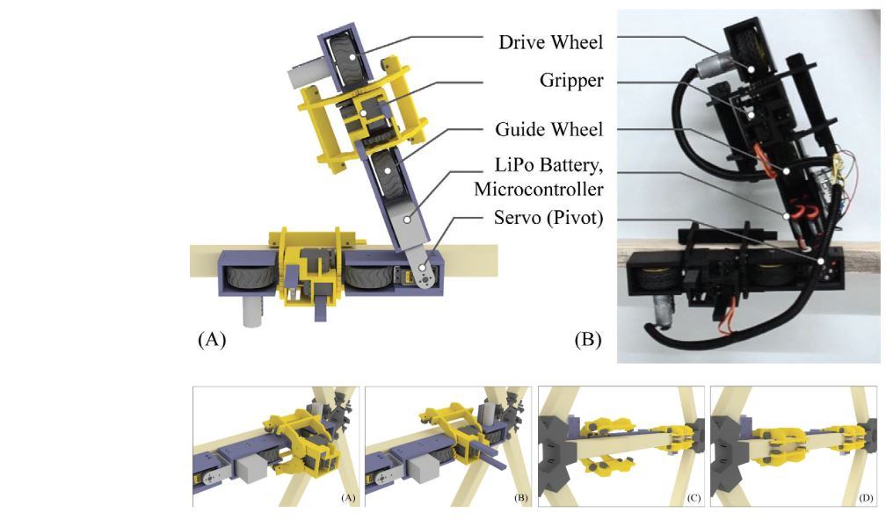
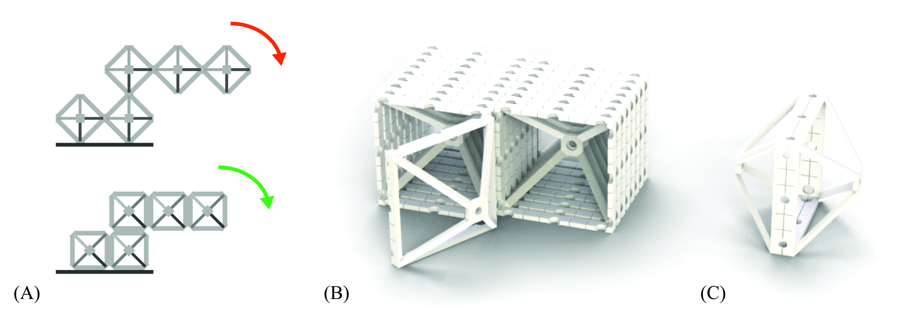
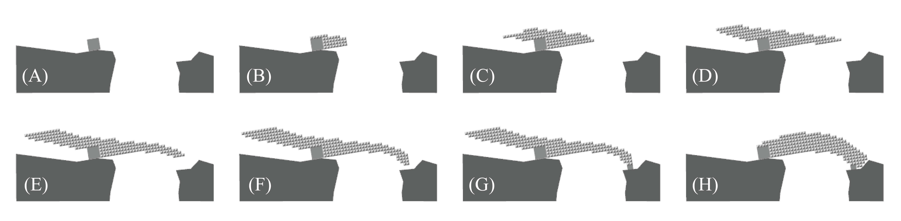
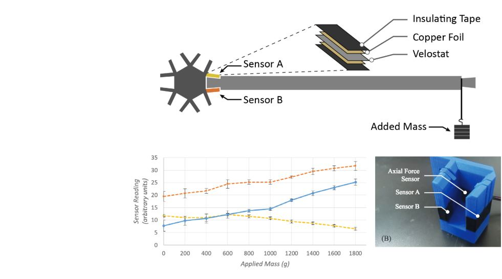
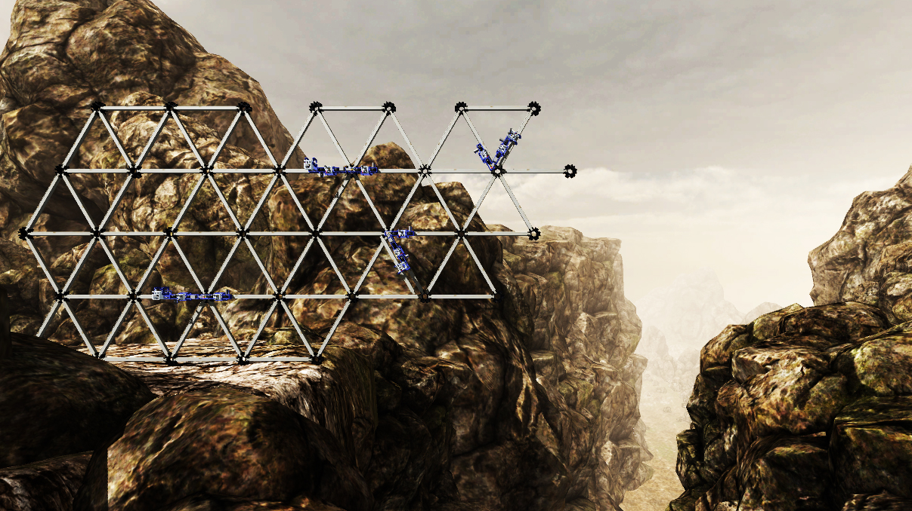
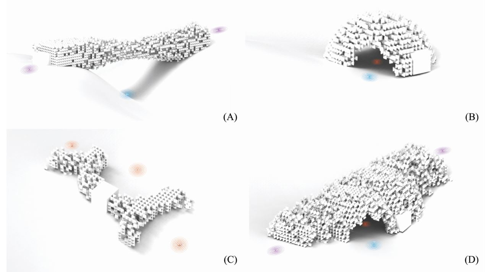

<div class="row">
  <div class="col-sm-12">
    <div id="carouselExampleControls" class="carousel slide" data-ride="carousel">
      <ol class="carousel-indicators">
        <li data-target="#carouselExampleControls" data-slide-to="0" class="active"></li>
        <li data-target="#carouselExampleControls" data-slide-to="1"></li>
        <li data-target="#carouselExampleControls" data-slide-to="2"></li>
        <li data-target="#carouselExampleControls" data-slide-to="3"></li>
        <li data-target="#carouselExampleControls" data-slide-to="4"></li>
        <li data-target="#carouselExampleControls" data-slide-to="5"></li>
        <li data-target="#carouselExampleControls" data-slide-to="6"></li>
        <li data-target="#carouselExampleControls" data-slide-to="7"></li>
        <li data-target="#carouselExampleControls" data-slide-to="8"></li>
        <!-- <li data-target="#carouselExampleControls" data-slide-to="9"></li> -->
      </ol>
      <div class="carousel-inner" role="listbox">
        <div class="carousel-item active">
          
        </div>
        <div class="carousel-item">
          <iframe width="964" height="542" src="https://www.youtube.com/embed/DBzll7egKNs" frameborder="0" allow="accelerometer; autoplay; encrypted-media; gyroscope; picture-in-picture" allowfullscreen></iframe>
        </div>
        <div class="carousel-item">
          
        </div>
        <div class="carousel-item">
          
        </div>
        <div class="carousel-item">
          
        </div>
        <div class="carousel-item">
          
        </div>
        <div class="carousel-item">
          
        </div>
        <div class="carousel-item">
          
        </div>
        <div class="carousel-item">
          
        </div>
        <!-- <div class="carousel-item">
          
        </div> -->
      </div>
      <a class="carousel-control-prev" href="#carouselExampleControls" role="button" data-slide="prev">
        <span class="carousel-control-prev-icon" aria-hidden="true"></span>
        <span class="sr-only">Previous</span>
      </a>
      <a class="carousel-control-next" href="#carouselExampleControls" role="button" data-slide="next">
        <span class="carousel-control-next-icon" aria-hidden="true"></span>
        <span class="sr-only">Next</span>
      </a>
    </div>

    <div class="main-text hidden-xs">
      <div class="projDesc">
        <h2>STRUT CLIMBING ROBOT</h2> <br>
        <p>Harvard, 2015-2017 &nbsp; <a href='../14_strut/home'>Link</a> <br>  
        
        Previous contributions in construction robotics have required costly custom building materials. This strut-climbing robot was developed to work with low-cost materials such as dimensional lumber. Minor dimensional variation associated such real-world materials adds considerable complexity to assembly tasks. <br>

        <a href='https://link.springer.com/epdf/10.1007/s11721-017-0149-2?author_access_token=jVqWd0hfdBPJv8-sbDoF2_e4RwlQNchNByi7wbcMAY5cNCfQS5iRZZvnfbzRrbmlSLgn_ITr5ODzIzYlsSBbvwyrnvkNUQQfQjNNJw1oOqypF5NN5Jc9MuC_GbqIDiQFlVNdLC67b0pDsLv06k76DA%3D%3D'> <i>Swarm Intelligence</i> paper</a><br>  
        <a href='http://papers.cumincad.org/data/works/att/acadia17_382.pdf'> <i>ACADIA 2017</i> paper</a><br>
        <a href='../data/iros17.pdf'> <i>IROS 2017</i> paper</a><br> 

        Images: Nathan Melenbrink    
        </p>
     </div>
    </div>
  </div>
</div>

